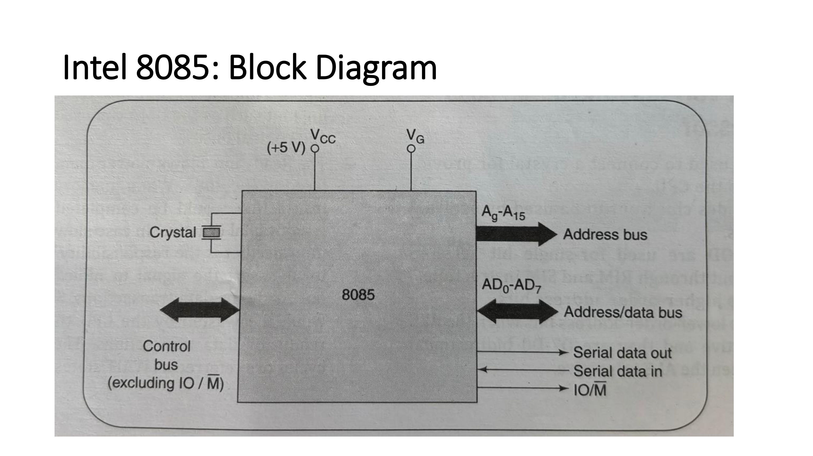
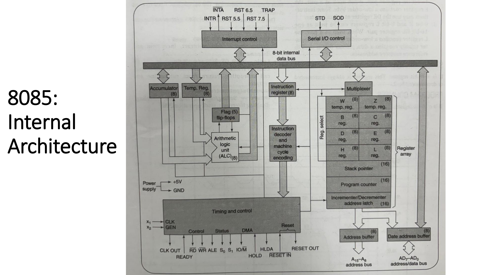
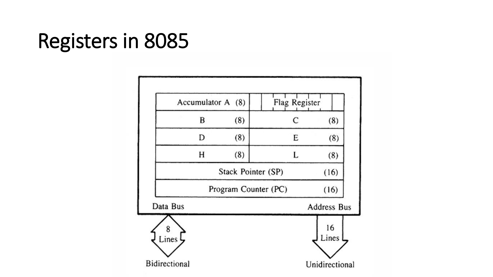
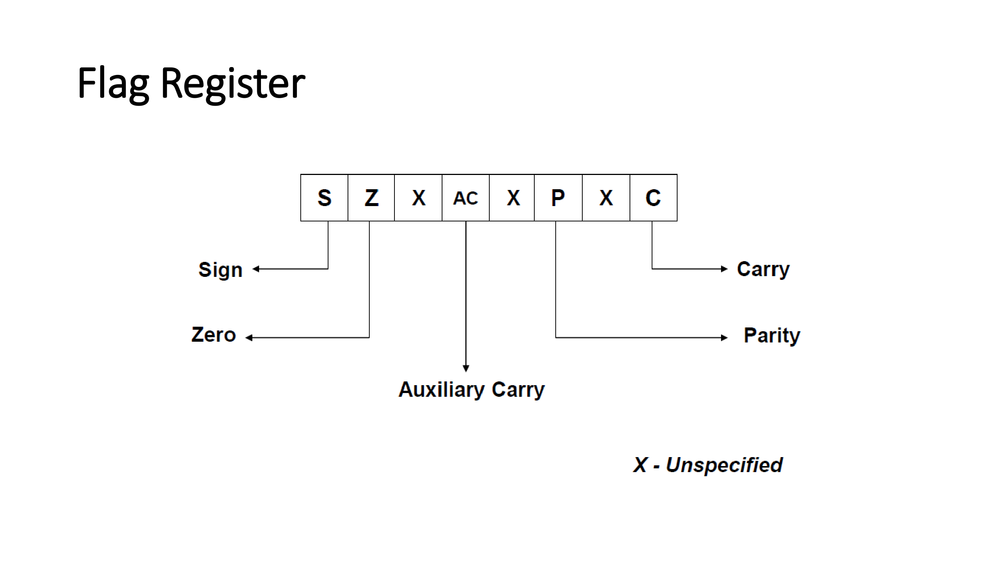
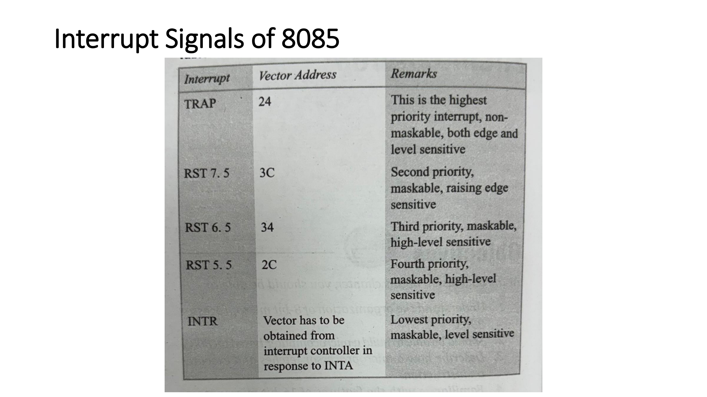
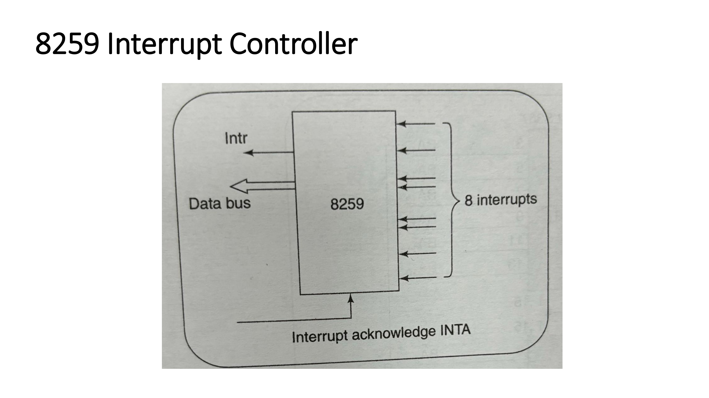

Chapter 2 — 8085 Microprocessor Architecture, Interfacing & Complete Instruction Set¶
Course Code: 3CS526CC23
Course Title: Microprocessor and Interfacing [3 0 2 4]
Governing Standard:
notes_makerSkill (Comprehensive Chapter Notes Generator)Primary Source: Faculty Lecture Presentations (
8085 PPT.pdf,3CS526CC23 Introduction.pdf) & Reference Literature (Ramesh Gaonkar, Hall & Rao)
1. Chapter Overview¶
This chapter delivers a thorough, university-level examination of the Intel 8085 8-bit microprocessor. It integrates internal architecture, register configuration, flag behaviors, multiplexed bus operations, pin specifications, machine status decoding, interrupt processing, 8259 Programmable Interrupt Controller (PIC) interfacing, and a fully detailed, instruction-by-instruction reference of the entire 8085 instruction set (Data Transfer, Arithmetic, Logical, Branching, and Machine Control) with addressing modes, opcode sizes, machine cycles, T-states, flag impacts, and worked assembly routines.
[Source: 8085 PPT, Slides 1–34]
2. Fundamental Architectural Concepts & Specifications¶
Definition: Microprocessor¶
Meaning: A digital integrated circuit that functions as the central arithmetic, logical, and control processing unit of a microcomputer system.
Formal Definition: An 8-bit, multipurpose, clock-driven, NMOS/HMOS register-based Central Processing Unit (CPU) capable of fetching, decoding, and executing machine language instructions to manipulate binary data.
Intuition: The electronic "brain" that coordinates memory and input/output peripherals via a synchronized three-bus architecture.
Example: The Intel 8085A operating with a 6.144 MHz crystal to produce a 3.072 MHz internal execution clock.
[Source: 8085 PPT, Slide 10]
Key Architectural Specifications of Intel 8085¶
| Parameter | Specification | Functional Details |
|---|---|---|
| Word Length | 8 bits | Processes, transfers, and stores data in 8-bit byte increments. |
| Data Bus | 8 bits (\(D_7 - D_0\)) | Bidirectional; time-multiplexed with lower address bus (\(AD_7 - AD_0\)). |
| Address Bus | 16 bits (\(A_{15} - A_0\)) | Unidirectional; directly addresses \(2^{16} = 65,536\text{ bytes}\) (64 KB). |
| Clock Frequency | 3.0 MHz (8085A) / 5.0 MHz (8085A-2) | Driven by external quartz crystal on \(X_1, X_2\); divided by 2 internally. |
| Power Supply | Single \(+5\text{V DC}\) (\(V_{CC}\)), \(V_{SS}\)(GND) | Major improvement over 8080 (which required \(+5\text{V}, -5\text{V}, +12\text{V}\)). |
| Packaging | 40-pin Plastic / Ceramic DIP | Dual-in-line package. |
| Internal Registers | 12 addressable 8-bit registers | A, B, C, D, E, H, L, Flags, SP (16-bit), PC (16-bit), W, Z (internal). |
| Interrupt System | 5 Hardware Interrupts | TRAP (NMI), RST 7.5, RST 6.5, RST 5.5, INTR. |
| DMA Controller Support | HOLD and HLDA lines | Provides high-speed direct memory transfer bypassing the CPU. |
| Serial I/O Lines | Dedicated SID and SOD pins | Software-controlled 1-bit serial communication via RIM / SIM. |
| Machine Status Pins | \(IO/\overline{\text{M}}\), \(S_1\), \(S_0\) | Explicitly signal active bus transaction type to peripheral decoders. |
[Source: 8085 PPT, Slide 12]
3. Internal Functional Architecture¶
The internal organization of the 8085 is partitioned into functional processing units:
Figure 2.1: 8085 High-Level Block Diagram¶

Figure 2.2: 8085 Detailed Internal Functional Diagram¶

flowchart TD
subgraph ALU_Subsystem["Arithmetic Logic Unit (ALU) Subsystem"]
ACC["Accumulator (Reg A - 8 bit)"]
TEMP_REG["Temporary Register (8 bit)"]
ALU["8-Bit ALU"]
FLAGS["Flag Register (5 Flip-Flops)"]
ACC --> ALU
TEMP_REG --> ALU
ALU --> ACC
ALU --> FLAGS
end
subgraph Register_Array["Internal Register Array"]
W_Z["Temporary Regs (W, Z - 8 bit each)"]
BC["B (8) | C (8)"]
DE["D (8) | E (8)"]
HL["H (8) | L (8) - Memory Pointer"]
SP["Stack Pointer (SP - 16 bit)"]
PC["Program Counter (PC - 16 bit)"]
ADDR_INC["Incrementer / Decrementer Address Latch"]
end
subgraph Control_Unit["Timing & Control Unit"]
CLK_GEN["Clock Generator (X1, X2, CLK OUT)"]
CTRL_SIGS["Control Signals: RD#, WR#, ALE"]
STATUS_SIGS["Status Signals: IO/M#, S0, S1"]
DMA_SIGS["DMA: HOLD, HLDA"]
RESET_SIGS["Reset: RESET IN#, RESET OUT"]
end
subgraph Instruction_Unit["Instruction Register & Decoder"]
IR["Instruction Register (8 bit)"]
ID["Instruction Decoder & Machine Cycle Encoding"]
IR --> ID
ID --> Control_Unit
end
subgraph Interrupt_Serial["Interrupt & Serial I/O"]
INTR_CTRL["Interrupt Control (TRAP, RST 7.5, 6.5, 5.5, INTR, INTA#)"]
SERIAL_CTRL["Serial I/O (SID, SOD)"]
end
ExtBus["8-Bit Internal Data Bus"] <--> ALU_Subsystem
ExtBus <--> Register_Array
ExtBus <--> Instruction_Unit
ExtBus <--> Interrupt_Serial
Register_Array --> ADDR_INC
ADDR_INC --> AddressBus["Address Bus A15-A8 & AD7-AD0"]
Detailed Written Analysis of Functional Blocks¶
-
Accumulator (Register A): An 8-bit register connected directly to the internal data bus and ALU input. It supplies one of the two ALU source operands and receives the result of all arithmetic and logical operations. It also serves as the default register for all memory accumulator loads/stores (
LDA,STA) and I/O transfers (IN,OUT). -
Temporary Register: An 8-bit non-programmable register that holds the second operand for the ALU. When an instruction such as
ADD Bexecutes, the contents of register B are transferred into the temporary register before the ALU adds it to the accumulator. -
Flag Register: Five 1-bit status flip-flops (\(S, Z, AC, P, CY\)) that record execution status and conditions following ALU operations.
-
General-Purpose Registers (B, C, D, E, H, L): Six 8-bit registers organized as register pairs:
-
BC Pair: Holds 16-bit count values or memory addresses.
-
DE Pair: Holds secondary 16-bit memory addresses or data operands.
-
HL Pair: Functions as the primary 16-bit Memory Pointer (\(M\)). Whenever an instruction references operand
M, the CPU accesses the physical memory location addressed by the 16-bit contents of \(H\)(high byte) and \(L\) (low byte). -
Temporary Registers W and Z: Two internal 8-bit registers utilized strictly by the control unit to hold 16-bit addresses or data operands during two-byte and three-byte instruction executions (e.g.,
CALL,XCHG,LHLD). Completely inaccessible to programmers. -
Program Counter (PC): A 16-bit register containing the memory address of the next sequential instruction byte to be fetched. It is automatically incremented after each byte fetch.
-
Stack Pointer (SP): A 16-bit register storing the current memory address of the Top of Stack in Read/Write RAM. The stack grows downward toward lower memory addresses. SP is decremented by 2 during
PUSHandCALL, and incremented by 2 duringPOPandRET. -
Instruction Register (IR) & Decoder: Holds the 8-bit opcode fetched from memory during the Opcode Fetch machine cycle (\(M_1\)). The decoder translates this binary opcode into micro-operations that direct internal execution.
-
Timing and Control Unit: Orchestrates all internal CPU operations and drives external control buses (\(\overline{\text{RD}}\), \(\overline{\text{WR}}\), \(\text{ALE}\)) in synchrony with the clock oscillator.
[Source: 8085 PPT, Slides 13, 20–22]
4. 8085 Register Configuration & Flag Register Details¶
Figure 2.3: 8085 Register Array Structure¶

Figure 2.4: 8085 Flag Register Format¶

Bit Position: D7 D6 D5 D4 D3 D2 D1 D0
Flag Bit: [ S | Z | X | AC | X | P | X | CY ]
(X = Unspecified / Undefined)
| Flag Symbol | Flag Name | Set Condition (\(= 1\)) | Reset Condition (\(= 0\)) |
|---|---|---|---|
| S | Sign Flag | Bit \(D_7\) of ALU result is 1 (negative signed number). |
Bit \(D_7\) of ALU result is 0 (positive signed number). |
| Z | Zero Flag | ALU result is exactly 00H (all 8 bits zero). |
ALU result is non-zero (01H to FFH). |
| AC | Auxiliary Carry | Carry generated out of bit \(D_3\) into bit \(D_4\)(BCD half-carry). | No carry from bit \(D_3\) to \(D_4\). |
| P | Parity Flag | Result contains an even number of 1-bits (Even Parity). | Result contains an odd number of 1-bits (Odd Parity). |
| CY | Carry Flag | Carry generated out of MSB (\(D_7\)) in addition, or borrow in subtraction. | No carry out of \(D_7\) or borrow required. |
Worked Inline Example: Flag Calculation¶
Execute ADD B where Accumulator \(\text{A} = \text{C4H}\) (\(1100\,0100_2\)) and \(\text{B} = \text{5CH}\) (\(0101\,1100_2\)):
-
Carry Flag (CY):
1(Carry out of bit \(D_7\)). -
Zero Flag (Z):
0(Lower 8 bits =20H\(\neq 0\)). -
Sign Flag (S):
0(Bit \(D_7\) of result is0). -
Auxiliary Carry (AC):
1(Carry out of bit \(D_3\) into bit \(D_4\): bits \(D_3\) of both operands are0and1respectively; carry chain from lower bits generates AC=1). -
Parity Flag (P):
0(Result0010 0000has only one1bit \(\rightarrow\) odd parity).
[Source: 8085 PPT, Slide 23]
5. Pin Diagram, Signal Classifications & Bus Demultiplexing¶
Figure 2.5: 8085 Pin Out & Interrupt Lines¶

Bus Demultiplexing Mechanism (ALE)¶
To minimize physical IC pin count to 40, the 8085 time-multiplexes the lower 8 bits of the address bus with the 8-bit bidirectional data bus (\(AD_7 - AD_0\)).
-
During state \(T_1\) of every machine cycle, lines \(AD_7 - AD_0\) emit the lower 8 address bits (\(A_7 - A_0\)).
-
Simultaneously, the CPU pulses \(\text{ALE}\) (Address Latch Enable) HIGH.
-
The falling edge of \(\text{ALE}\) strobes the address into an external 8-bit D-type latch (such as the 74LS373).
-
During states \(T_2, T_3, T_4\), \(\text{ALE}\) remains LOW, and lines \(AD_7 - AD_0\) function exclusively as bidirectional data lines (\(D_7 - D_0\)).
sequenceDiagram
participant CPU as 8085 CPU
participant Latch as 74LS373 Latch
participant Mem as Memory / Peripherals
Note over CPU,Mem: T1 State: Address Transmission & Latching
CPU->>Latch: Assert AD7-AD0 = A7-A0 (Lower Address Byte)
CPU->>Latch: Pulse ALE HIGH -> LOW
Latch->>Mem: Holds Stable Address Lines A7-A0
Note over CPU,Mem: T2 - T4 States: Data Transfer
CPU->>Mem: Assert RD# or WR# LOW
CPU->>Mem: AD7-AD0 switch to bidirectional Data Bus D7-D0
Mem-->>CPU: Data Byte Read / Written
Complete Machine Status Signal Decoding Table¶
The combination of \(IO/\overline{\text{M}}\), \(S_1\), and \(S_0\) defines the active machine cycle:
| \(IO/\overline{\text{M}}\) | \(S_1\) | \(S_0\) | Machine Cycle | Active Control Signal | Typical T-States |
|---|---|---|---|---|---|
| 0 | 1 | 1 | Opcode Fetch (OF) | \(\overline{\text{RD}} = 0\) | 4 or 6 |
| 0 | 1 | 0 | Memory Read (MR) | \(\overline{\text{RD}} = 0\) | 3 |
| 0 | 0 | 1 | Memory Write (MW) | \(\overline{\text{WR}} = 0\) | 3 |
| 1 | 1 | 0 | I/O Read (IOR) | \(\overline{\text{RD}} = 0\) | 3 |
| 1 | 0 | 1 | I/O Write (IOW) | \(\overline{\text{WR}} = 0\) | 3 |
| 1 | 1 | 1 | Interrupt Acknowledge (INA) | \(\overline{\text{INTA}} = 0\) | 6 or 12 |
| 0 | 0 | 0 | Halt State | None (Buses Tri-Stated) | Infinite |
[Source: 8085 PPT, Slides 15–19]
6. Interrupt System & 8259 PIC Interfacing¶
8085 Hardware Interrupt Hierarchy¶
| Interrupt | Priority | Trigger Mode | Maskability | Vector Address | Vector Calculation Formula |
|---|---|---|---|---|---|
| TRAP | 1 (Highest) | Level & Rising-Edge | Non-Maskable | 0024H |
Fixed vector (\(4.5 \times 8 = 36_{10} = 24\text{H}\)) |
| RST 7.5 | 2 | Rising-Edge Only | Maskable (SIM) |
003CH |
Fixed vector (\(7.5 \times 8 = 60_{10} = 3\text{CH}\)) |
| RST 6.5 | 3 | High-Level Only | Maskable (SIM) |
0034H |
Fixed vector (\(6.5 \times 8 = 52_{10} = 34\text{H}\)) |
| RST 5.5 | 4 | High-Level Only | Maskable (SIM) |
0020H |
Fixed vector (\(5.5 \times 8 = 44_{10} = 20\text{H}\)) |
| INTR | 5 (Lowest) | High-Level Only | Maskable (EI/DI) |
External | Provided by external hardware / 8259 PIC |
Figure 2.6: 8259 Interrupt Controller Block Diagram¶

8259 Handshake Execution Sequence¶
-
Peripheral devices assert interrupt request lines \(IR_0 - IR_7\) on the 8259 PIC.
-
8259 evaluates priority logic against the Interrupt Mask Register (IMR). If unmasked, it raises
INTRHIGH to the 8085. -
Upon finishing its current instruction cycle, 8085 issues three negative pulses on \(\overline{\text{INTA}}\):
-
1st Pulse: 8259 places the
CALLopcode (CDH) onto the data bus. -
2nd Pulse: 8259 places the lower byte of the Subroutine Call Address onto the data bus.
-
3rd Pulse: 8259 places the higher byte of the Subroutine Call Address onto the data bus.
-
The 8085 pushes its 16-bit Program Counter (PC) onto the stack and jumps to the vector address.
[Source: 8085 PPT, Slides 26–34]
7. Complete 8085 Instruction Set (Exhaustive Reference)¶
The 8085 features 80 basic instructions that expand into 246 total opcodes. Instructions are 1, 2, or 3 bytes long.
7.1 Data Transfer Group (13 Primary Instructions)¶
Rule: Data transfer instructions never affect condition flags.
| Mnemonic | Operands | Bytes | Machine Cycles | T-States | Addressing Mode | Operation Description |
|---|---|---|---|---|---|---|
| MOV | \(r_1, r_2\) | 1 | 1 (OF) | 4 | Register | \((r_1) \leftarrow (r_2)\). Copies register \(r_2\) to \(r_1\). |
| MOV | \(r, M\) | 1 | 2 (OF, MR) | 7 | Reg. Indirect | \((r) \leftarrow ((H)(L))\). Copies memory byte at address HL to register \(r\). |
| MOV | \(M, r\) | 1 | 2 (OF, MW) | 7 | Reg. Indirect | \(((H)(L)) \leftarrow (r)\). Copies register \(r\) to memory byte at HL. |
| MVI | \(r, \text{data8}\) | 2 | 2 (OF, MR) | 7 | Immediate | \((r) \leftarrow \text{byte 2}\). Loads immediate 8-bit data into register \(r\). |
| MVI | \(M, \text{data8}\) | 2 | 3 (OF, MR, MW) | 10 | Immediate/Indirect | \(((H)(L)) \leftarrow \text{byte 2}\). Stores immediate byte into memory at HL. |
| LXI | \(rp, \text{data16}\) | 3 | 3 (OF, MR, MR) | 10 | Immediate | \((rp) \leftarrow \text{bytes 2 \& 3}\). Loads 16-bit data into register pair \(rp\) (BC, DE, HL, SP). |
| LDA | \(\text{addr16}\) | 3 | 4 (OF, MR, MR, MR) | 13 | Direct | \((A) \leftarrow (\text{addr16})\). Loads byte from direct 16-bit address into A. |
| STA | \(\text{addr16}\) | 3 | 4 (OF, MR, MR, MW) | 13 | Direct | \((\text{addr16}) \leftarrow (A)\). Stores Accumulator byte into direct 16-bit address. |
| LHLD | \(\text{addr16}\) | 3 | 5 (OF, 4 MR) | 16 | Direct | \((L) \leftarrow (\text{addr})\), \((H) \leftarrow (\text{addr}+1)\). Loads HL from direct address. |
| SHLD | \(\text{addr16}\) | 3 | 5 (OF, 2 MR, 2 MW) | 16 | Direct | \((\text{addr}) \leftarrow (L)\), \((\text{addr}+1) \leftarrow (H)\). Stores HL into direct address. |
| LDAX | \(rp\)(BC/DE) | 1 | 2 (OF, MR) | 7 | Reg. Indirect | \((A) \leftarrow ((rp))\). Loads Accumulator from address in BC or DE. |
| STAX | \(rp\)(BC/DE) | 1 | 2 (OF, MW) | 7 | Reg. Indirect | \(((rp)) \leftarrow (A)\). Stores Accumulator into address held in BC or DE. |
| XCHG | None | 1 | 1 (OF) | 4 | Register | \((H) \leftrightarrow (D)\), \((L) \leftrightarrow (E)\). Swaps HL and DE register pairs. |
Code Examples — Data Transfer¶
; ─── MOV: Register to Register ───────────────────────────────────────
MOV A, B ; Copy B into Accumulator A
MOV H, D ; Copy D into H
MOV C, A ; Copy Accumulator into C
; ─── MOV: Register to/from Memory (HL as pointer) ────────────────────
LXI H, 2050H ; HL = 2050H (point to memory location)
MOV A, M ; A = [2050H] (read byte from memory)
MVI M, 55H ; [2050H] = 55H (write immediate to memory)
MOV M, B ; [2050H] = B (write register B to memory)
; ─── MVI: Immediate Load ─────────────────────────────────────────────
MVI A, 0AH ; A = 0AH
MVI B, 05H ; B = 05H
MVI C, 0FFH ; C = FFH
; ─── LXI: Load Register Pair Immediate ───────────────────────────────
LXI B, 1234H ; BC = 1234H (B=12H, C=34H)
LXI D, 2050H ; DE = 2050H
LXI H, 3000H ; HL = 3000H
LXI SP, 4000H ; SP = 4000H (initialize stack)
; ─── LDA / STA: Direct Memory Transfer ──────────────────────────────
LDA 2050H ; A = [2050H] (load from direct address)
STA 3000H ; [3000H] = A (store to direct address)
; ─── LHLD / SHLD: Load/Store HL Pair ────────────────────────────────
LHLD 2050H ; L = [2050H], H = [2051H]
SHLD 3000H ; [3000H] = L, [3001H] = H
; ─── LDAX / STAX: Indirect via BC or DE ─────────────────────────────
LXI B, 2050H ; BC = 2050H
LDAX B ; A = [2050H] (load via BC pointer)
LXI D, 3000H ; DE = 3000H
STAX D ; [3000H] = A (store via DE pointer)
; ─── XCHG: Swap HL and DE ────────────────────────────────────────────
LXI H, 1234H ; HL = 1234H
LXI D, 5678H ; DE = 5678H
XCHG ; Now HL = 5678H, DE = 1234H
Flag Impact: All arithmetic instructions update \(S, Z, AC, P, CY\), except INX and DCX (which affect NO flags), and DAD (which updates ONLY the Carry Flag CY).
| Mnemonic | Operands | Bytes | Cycles | T-States | Flags Affected | Operation Description |
|---|---|---|---|---|---|---|
| ADD | \(r\) | 1 | 1 | 4 | All (\(S,Z,AC,P,CY\)) | \((A) \leftarrow (A) + (r)\). Adds register to Accumulator. |
| ADD | \(M\) | 1 | 2 | 7 | All | \((A) \leftarrow (A) + ((H)(L))\). Adds memory byte at HL to A. |
| ADI | \(\text{data8}\) | 2 | 2 | 7 | All | \((A) \leftarrow (A) + \text{data8}\). Adds immediate byte to A. |
| ADC | \(r\)/\(M\) | 1 | 1 / 2 | 4 / 7 | All | \((A) \leftarrow (A) + (r/M) + CY\). Add with Carry. |
| ACI | \(\text{data8}\) | 2 | 2 | 7 | All | \((A) \leftarrow (A) + \text{data8} + CY\). Add immediate with Carry. |
| SUB | \(r\)/\(M\) | 1 | 1 / 2 | 4 / 7 | All | \((A) \leftarrow (A) - (r/M)\). Subtracts register/memory from A. |
| SUI | \(\text{data8}\) | 2 | 2 | 7 | All | \((A) \leftarrow (A) - \text{data8}\). Subtracts immediate byte from A. |
| SBB | \(r\)/\(M\) | 1 | 1 / 2 | 4 / 7 | All | \((A) \leftarrow (A) - (r/M) - CY\). Subtract with Borrow. |
| SBI | \(\text{data8}\) | 2 | 2 | 7 | All | \((A) \leftarrow (A) - \text{data8} - CY\). Subtract immediate with Borrow. |
| INR | \(r\)/\(M\) | 1 | 1 / 3 | 4 / 10 | \(S, Z, AC, P\) (CY NOT affected) | Increments register or memory byte by 1. |
| DCR | \(r\)/\(M\) | 1 | 1 / 3 | 4 / 10 | \(S, Z, AC, P\) (CY NOT affected) | Decrements register or memory byte by 1. |
| INX | \(rp\) | 1 | 1 | 6 | None | \((rp) \leftarrow (rp) + 1\). 16-bit increment of BC, DE, HL, or SP. |
| DCX | \(rp\) | 1 | 1 | 6 | None | \((rp) \leftarrow (rp) - 1\). 16-bit decrement of BC, DE, HL, or SP. |
| DAD | \(rp\) | 1 | 3 | 10 | CY Only | \((HL) \leftarrow (HL) + (rp)\). 16-bit double addition to HL. |
| DAA | None | 1 | 1 | 4 | All | Decimal Adjust Accumulator. Converts binary sum in A to BCD. |
Code Examples — Arithmetic¶
; ─── ADD / ADI: Addition ─────────────────────────────────────────────
MVI A, 50H ; A = 50H
MVI B, 30H ; B = 30H
ADD B ; A = 50H + 30H = 80H (S=1, CY=0)
ADI 20H ; A = A + 20H = A0H (immediate addition)
; ─── ADC / ACI: Add with Carry (16-bit / multi-byte addition) ────────
; Add 16-bit number in (D,E) to 16-bit number in (H,L):
MOV A, L ; A = L (low byte)
ADD E ; A = L + E; sets/clears CY
MOV L, A ; Store low byte sum
MOV A, H ; A = H (high byte)
ADC D ; A = H + D + CY (carry from low byte)
MOV H, A ; Store high byte sum (HL = HL + DE)
; ─── SUB / SUI: Subtraction ─────────────────────────────────────────
MVI A, 80H ; A = 80H
MVI C, 30H ; C = 30H
SUB C ; A = 80H - 30H = 50H (CY=0, Z=0)
SUI 10H ; A = A - 10H = 40H (immediate subtraction)
; ─── SBB / SBI: Subtract with Borrow ───────────────────────────────
; Multi-byte subtraction (32-bit: BC:DE - HL:some_reg):
MOV A, E ; Low byte of minuend
SUB L ; Subtract low byte; CY = borrow
MOV E, A ; Store low byte result
MOV A, D ; High byte of minuend
SBB H ; Subtract high byte WITH borrow
MOV D, A ; Store high byte result
; ─── INR / DCR: Increment / Decrement Register ───────────────────────
MVI A, 0FFH ; A = FFH
INR A ; A = 00H (Z=1, S=0, CY NOT affected!)
MVI B, 01H
DCR B ; B = 00H (Z=1)
LXI H, 2050H
INR M ; Increment byte at [2050H] by 1
DCR M ; Decrement byte at [2050H] by 1
; ─── INX / DCX: 16-bit Increment / Decrement (NO flags!) ────────────
LXI H, 2000H
INX H ; HL = 2001H (no flags changed)
INX H ; HL = 2002H
DCX H ; HL = 2001H
; ─── DAD: 16-bit Add to HL ───────────────────────────────────────────
LXI H, 1234H ; HL = 1234H
LXI B, 0011H ; BC = 0011H
DAD B ; HL = HL + BC = 1245H (only CY affected!)
; ─── DAA: BCD Addition Correction ───────────────────────────────────
MVI A, 39H ; A = BCD 39
MVI B, 28H ; B = BCD 28
ADD B ; Binary: A = 61H (but not valid BCD!)
DAA ; Corrects: A = 67H (BCD 39 + 28 = 67)
| Mnemonic | Operands | Bytes | Cycles | T-States | Flags Affected | Operational Mechanics |
|---|---|---|---|---|---|---|
| ANA | \(r\)/\(M\) | 1 | 1 / 2 | 4 / 7 | \(S, Z, P\) updated; \(CY=0, AC=1\) | Bitwise AND with Accumulator. |
| ANI | \(\text{data8}\) | 2 | 2 | 7 | \(S, Z, P\) updated; \(CY=0, AC=1\) | Bitwise AND immediate byte with Accumulator. |
| ORA | \(r\)/\(M\) | 1 | 1 / 2 | 4 / 7 | \(S, Z, P\) updated; \(CY=0, AC=0\) | Bitwise OR with Accumulator. |
| ORI | \(\text{data8}\) | 2 | 2 | 7 | \(S, Z, P\) updated; \(CY=0, AC=0\) | Bitwise OR immediate byte with Accumulator. |
| XRA | \(r\)/\(M\) | 1 | 1 / 2 | 4 / 7 | \(S, Z, P\) updated; \(CY=0, AC=0\) | Bitwise XOR with Accumulator (XRA A clears A and CY). |
| XRI | \(\text{data8}\) | 2 | 2 | 7 | \(S, Z, P\) updated; \(CY=0, AC=0\) | Bitwise XOR immediate byte with Accumulator. |
| CMA | None | 1 | 1 | 4 | None | \((A) \leftarrow \overline{(A)}\). One's complement of Accumulator. |
| CMC | None | 1 | 1 | 4 | CY Only | \((CY) \leftarrow \overline{(CY)}\). Complements Carry Flag. |
| STC | None | 1 | 1 | 4 | CY Only | \((CY) \leftarrow 1\). Explicitly sets Carry Flag to 1. |
| CMP | \(r\)/\(M\) | 1 | 1 / 2 | 4 / 7 | All | Compares register/memory with A (computes \(A - r\)). |
| CPI | \(\text{data8}\) | 2 | 2 | 7 | All | Compares immediate byte with A. |
| RLC | None | 1 | 1 | 4 | CY Only | Rotate Left Circular: Bit 7 enters Bit 0 and CY. |
| RRC | None | 1 | 1 | 4 | CY Only | Rotate Right Circular: Bit 0 enters Bit 7 and CY. |
| RAL | None | 1 | 1 | 4 | CY Only | Rotate Left Through Carry: 9-bit rotation through CY. |
| RAR | None | 1 | 1 | 4 | CY Only | Rotate Right Through Carry: 9-bit rotation through CY. |
Code Examples — Logical Operations¶
; ─── ANA / ANI: Bitwise AND ──────────────────────────────────────────
MVI A, 0F0H ; A = 1111 0000
MVI B, 0AAH ; B = 1010 1010
ANA B ; A = 1010 0000 = A0H (mask upper nibble with B)
ANI 0FH ; A = A & 0FH → clears upper nibble, keeps lower nibble
; Clear bit 3 of A using ANI:
MVI A, 0FFH
ANI 0F7H ; 1111 0111 → A bit 3 = 0, others unchanged
; ─── ORA / ORI: Bitwise OR ───────────────────────────────────────────
MVI A, 01H ; A = 0000 0001
MVI C, 80H ; C = 1000 0000
ORA C ; A = 1000 0001 = 81H (set bit 7)
ORI 08H ; A = A | 08H → set bit 3
; Convert ASCII digit to uppercase using OR (set bit 5):
MVI A, 41H ; A = 'A' (uppercase)
ORI 20H ; A = 61H = 'a' (lowercase)
; ─── XRA / XRI: Bitwise XOR ──────────────────────────────────────────
XRA A ; A = A XOR A = 00H (fastest way to clear accumulator!)
; Also: CY=0, AC=0, Z=1
MVI A, 0FFH
XRI 0AAH ; A = FFH XOR AAH = 55H (invert alternate bits)
; Toggle case of ASCII letter using XOR bit 5:
MVI A, 41H ; A = 'A' (uppercase, bit 5 = 0)
XRI 20H ; A = 61H = 'a' (bit 5 toggled → lowercase)
XRI 20H ; A = 41H = 'A' (toggle back)
; ─── CMA: One's Complement of Accumulator ────────────────────────────
MVI A, 35H ; A = 0011 0101
CMA ; A = 1100 1010 = CAH (no flags affected)
; Two's complement via CMA + ADI:
MVI A, 05H
CMA ; A = FAH (one's complement)
ADI 01H ; A = FBH (two's complement = -5 in 8-bit signed)
; ─── CMP / CPI: Compare (sets flags, A unchanged) ────────────────────
MVI A, 50H ; A = 50H
MVI B, 30H ; B = 30H
CMP B ; Flags = 50H - 30H: CY=0 (A>B), Z=0, S=0
JNC GREATER ; Jump if A >= B (Carry Not Set)
CPI 50H ; Compare A with immediate 50H
JZ EQUAL ; Jump if A == 50H (Zero Set)
; ─── STC / CMC: Carry Flag Manipulation ─────────────────────────────
STC ; CY = 1 (Set Carry)
CMC ; CY = 0 (Complement: 1 → 0)
CMC ; CY = 1 (Complement again: 0 → 1)
; ─── RLC / RRC: Rotate Circular (no carry) ───────────────────────────
MVI A, 10110001B ; A = B1H
RLC ; A rotated left: A = 01100011B = 63H, CY=1 (old bit7)
RRC ; A rotated right: A = 10110001B = B1H (restored)
; Use RLC to multiply A by 2:
MVI A, 05H ; A = 5
RLC ; A = 0AH = 10 (multiply by 2)
; ─── RAL / RAR: Rotate Through Carry (9-bit) ────────────────────────
STC ; CY = 1
MVI A, 10110001B ; A = B1H
RAL ; 9-bit rotate: A = 01100011B, CY = 1 (old bit 7 came out)
RAR ; 9-bit rotate right: CY rotated into bit 7
; 16-bit shift left (HL register pair) using RAL:
MVI A, 0 ; Start with clear carry
ORA A ; Clear CY (OR A with itself)
MOV A, L ; A = Low byte
RAL ; Shift L left through carry
MOV L, A ; Store L
MOV A, H ; A = High byte
RAL ; Shift H left, using carry from L
MOV H, A ; HL now shifted left 1 position
| Mnemonic | Condition Tested | Bytes | Cycles (Taken / Untaken) | T-States (Taken / Untaken) | Description |
|---|---|---|---|---|---|
| JMP | Unconditional | 3 | 3 | 10 | \((PC) \leftarrow \text{addr16}\). Direct 16-bit jump. |
| JC / JNC | \(CY = 1\)/\(CY = 0\) | 3 | 3 / 2 | 10 / 7 | Jump on Carry / No Carry. |
| JZ / JNZ | \(Z = 1\)/\(Z = 0\) | 3 | 3 / 2 | 10 / 7 | Jump on Zero / Not Zero. |
| JM / JP | \(S = 1\)/\(S = 0\) | 3 | 3 / 2 | 10 / 7 | Jump on Minus (Negative) / Positive. |
| JPE / JPO | \(P = 1\)/\(P = 0\) | 3 | 3 / 2 | 10 / 7 | Jump on Parity Even / Parity Odd. |
| PCHL | None | 1 | 1 | 6 | \((PC) \leftarrow (HL)\). Jumps to address held in HL pair. |
| CALL | Unconditional | 3 | 5 | 18 | Pushes \((PC)\) onto stack, jumps to direct address. |
| Ccond | Condition True / False | 3 | 5 / 2 | 18 / 9 | Conditional Subroutine Call. |
| RET | Unconditional | 1 | 3 | 10 | Pops 16-bit return address from stack into PC. |
| Rcond | Condition True / False | 1 | 3 / 1 | 12 / 6 | Conditional Subroutine Return. |
| RST \(n\) | \(n \in \{0..7\}\) | 1 | 3 | 12 | Software Restart: Calls vector \((n \times 8_{10})\). |
Code Examples — Branching & Control Flow¶
; ─── JMP: Unconditional Jump ──────────────────────────────────────────
JMP START ; Jump always to label START
; ─── JZ / JNZ: Jump on Zero / Not Zero ──────────────────────────────
MVI A, 00H
CPI 00H ; Compare A with 0 → Z=1
JZ IS_ZERO ; Jump because A == 0
MVI C, 0AH ; Counter = 10
LOOP:
; ... loop body ...
DCR C ; C = C - 1; Z=1 when C reaches 0
JNZ LOOP ; Repeat while C != 0
; ─── JC / JNC: Jump on Carry / No Carry ─────────────────────────────
MVI A, 50H
MVI B, 30H
CMP B ; A - B: CY=0 (no borrow; A > B)
JC A_LESS_THAN_B ; Jump only if A < B (Carry Set means borrow)
JNC A_GREATER_EQ ; Jump if A >= B
; ─── JM / JP: Jump on Sign (Minus / Positive) ────────────────────────
MVI A, 0FFH ; A = -1 in signed (bit 7 = 1)
ORA A ; Refresh sign flag
JM NEGATIVE ; Jump since S=1 (bit 7 set)
; ─── CALL / RET: Subroutine ──────────────────────────────────────────
CALL MY_SUBROUTINE ; Push PC onto stack, jump to subroutine
; ... returns here after RET ...
HLT
MY_SUBROUTINE:
MVI A, 0FFH ; Subroutine body
RET ; Pop return address from stack into PC
; ─── CALL with condition: Call if Zero ────────────────────────────────
CPI 00H
CZ HANDLE_ZERO ; Call HANDLE_ZERO only if A == 0
; ─── RST: Software Restart ────────────────────────────────────────────
RST 5 ; Call vector address 0028H (5 × 8)
RST 7 ; Call vector address 0038H (7 × 8)
; ─── PCHL: Indirect Jump via HL ─────────────────────────────────────
LXI H, TARGET_ADDR ; HL = jump destination address
PCHL ; PC = HL (jump to address in HL)
| Mnemonic | Operands | Bytes | Cycles | T-States | Flags Affected | Operational Mechanics |
|---|---|---|---|---|---|---|
| PUSH | \(rp\)(BC/DE/HL/PSW) | 1 | 3 | 12 | None | \((SP-1) \leftarrow (rp_H)\), \((SP-2) \leftarrow (rp_L)\), \(SP \leftarrow SP - 2\). |
| POP | \(rp\)(BC/DE/HL/PSW) | 1 | 3 | 10 | None (PSW updates all) | \((rp_L) \leftarrow (SP)\), \((rp_H) \leftarrow (SP+1)\), \(SP \leftarrow SP + 2\). |
| XTHL | None | 1 | 5 | 16 | None | Swaps \(L\) with \((SP)\), and \(H\) with \((SP+1)\). Top of stack exchange. |
| SPHL | None | 1 | 1 | 6 | None | \((SP) \leftarrow (HL)\). Copies HL address into Stack Pointer. |
| IN | \(\text{port8}\) | 2 | 3 | 10 | None | \((A) \leftarrow (\text{port8})\). Reads byte from 8-bit I/O port into A. |
| OUT | \(\text{port8}\) | 2 | 3 | 10 | None | \((\text{port8}) \leftarrow (A)\). Writes Accumulator byte to 8-bit I/O port. |
| EI / DI | None | 1 | 1 | 4 | None | Enable / Disable maskable hardware interrupts. |
| HLT | None | 1 | 1 | 5 | None | Halts CPU execution until interrupt or reset occurs. |
| NOP | None | 1 | 1 | 4 | None | No Operation; advances PC by 1. |
| RIM | None | 1 | 1 | 4 | None | Read Interrupt Mask & serial input bit (SID) into A. |
| SIM | None | 1 | 1 | 4 | None | Set Interrupt Mask & serial output bit (SOD) from A. |
[Source: 8085 PPT, Slides 24–25; Gaonkar Architecture & Programming]
Code Examples — Stack, I/O & Machine Control¶
; ─── PUSH / POP: Save and Restore Registers ──────────────────────────
PUSH B ; Push BC pair onto stack (SP = SP - 2)
PUSH D ; Push DE pair
PUSH H ; Push HL pair
PUSH PSW ; Push A and Flags
; ... critical section ...
POP PSW ; Restore A and Flags (reverse order!)
POP H ; Restore HL
POP D ; Restore DE
POP B ; Restore BC
; ─── XTHL: Exchange Top-of-Stack with HL ─────────────────────────────
LXI H, 1234H ; HL = 1234H
XTHL ; H ↔ [SP+1], L ↔ [SP] (swap TOS and HL)
; ─── SPHL: Copy HL to Stack Pointer ────────────────────────────────
LXI H, 2000H
SPHL ; SP = HL = 2000H (initialize/relocate stack)
; ─── IN / OUT: I/O Port Access ───────────────────────────────────────
IN 00H ; A = byte from I/O port 00H (e.g., switch state)
OUT 01H ; I/O port 01H = A (e.g., output to display)
; ─── EI / DI: Enable / Disable Interrupts ────────────────────────────
DI ; Disable all maskable interrupts
; ... critical section (no interrupt allowed) ...
EI ; Re-enable interrupts
; ─── RIM / SIM: Read / Set Interrupt Mask & Serial I/O ───────────────
RIM ; A = interrupt mask + SID bit (read current mask)
; After RIM:
; A[7] = SID (Serial Input Data bit)
; A[6:5:4] = pending RST7.5:6.5:5.5
; A[3] = interrupt enable flag
; A[2:1:0] = RST7.5:6.5:5.5 masks
MVI A, 0EH ; 0000 1110 = enable INTR, mask RST7.5,6.5,5.5
SIM ; Apply mask settings
; ─── HLT / NOP: Halt and No-Op ──────────────────────────────────────
NOP ; No operation (3 T-states used as delay)
HLT ; Halt CPU — waits for RESET or interrupt
Program 2.1: Finding the Maximum Number in an Array of \(N\) Bytes¶
; Task: Find maximum byte in array starting at 2050H of length 0AH. Store max at 2060H.
LXI H, 2050H ; HL points to array length
MOV C, M ; Load count into C (Count = 10)
INX H ; Point to first data element
MOV A, M ; Assume first element is MAX
DCR C ; Decrement counter
LOOP: INX H ; Advance pointer to next element
CMP M ; Compare A with memory byte (A - M)
JNC SKIP ; If Carry = 0 (A >= M), existing MAX is larger
MOV A, M ; If Carry = 1 (A < M), load new larger value into A
SKIP: DCR C ; Decrement count
JNZ LOOP ; Repeat until all elements evaluated
STA 2060H ; Store largest element into 2060H
HLT ; Halt execution
9. Exam-Oriented Review & High-Frequency Questions¶
- Explain the purpose and timing of the \(\text{ALE}\) pin during an Opcode Fetch machine cycle.
Answer: \(\text{ALE}\) pulses HIGH during \(T_1\) to indicate that \(AD_7 - AD_0\) carries the memory address (\(A_7 - A_0\)). The trailing edge of \(\text{ALE}\) latches this address into an external 74LS373 latch, enabling lines \(AD_7 - AD_0\) to be reused for data bus transfers during \(T_2 - T_4\).
- Why does
INX rpnot affect any flags whileINR raffects four flags?
Answer: INX is designed for pointer and address arithmetic (such as indexing through memory arrays). It preserves the status flags (specifically Zero and Carry) so that loop counters and comparison outcomes in the ALU are not altered during address increments.
- Compare
CALLandJMPin terms of stack interaction and execution states.
Answer: JMP merely replaces the contents of the Program Counter with a new target address (3 machine cycles, 10 T-states). CALL first pushes the 16-bit return address (PC) onto the stack (\(M_4, M_5\) Memory Write cycles) before loading PC with the target address (5 machine cycles, 18 T-states).